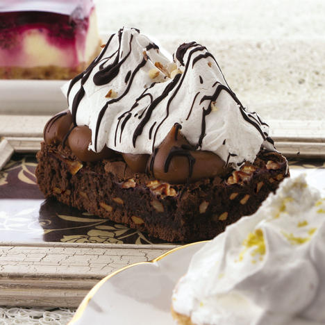

BROWNIE CON DULCE DE LECHE Y MERENGUE ITALIANO

Ingredientes:
Para el merengue
- 180 g de azúcar
- 60 ml de agua
- 3 claras de huevo
Para el brownie
- 100 g de chocolate
- 180 g de manteca
- 2 huevos
- 250 g de azúcar
- 90 g de harina 0000
- 30 g de cacao
- 100 g de nueces enteras
- 400 g de dulce de leche repostero
Elaboración:
Elaboración del brownie
- Utilizar el Rompenueces para abrir las nueces y cortarlas en trozos grandes.
- Derretir el chocolate y la manteca en el microondas durante 2 minutos.
- Verter en un Batidor Ideal y mezcla con los huevos, agregar el azúcar y volver a mezclar.
- Utilizar el Tamizador para incorporar con movimientos envolventes la harina y el cacao tamizados. Agregar las nueces y mezclar.
- Colocar la preparación en un molde de 26 cm en mantecado y cocinar en horno precalentado a 180°c durante 18 minutos.
- Dejar enfriar y cubrir con el dulce de leche. Reservar.
Elaboración del Merengue italiano
- Colocar en una ollita el agua y el azúcar a fuego medio hasta llegar a 118°c o retirando un poco del almíbar y al dejarlo caer dentro de un vaso con agua para que se enfríe, se puede formar una bolita.
- Mientras batir las claras a punto nieve, cuando están bien montadas agregar el almíbar en forma de hilo y seguir batiendo hasta que el merengue esté bien firme y brilloso.
- Cubrir el brownie y decorar con hilos de chocolate.
VOLVER